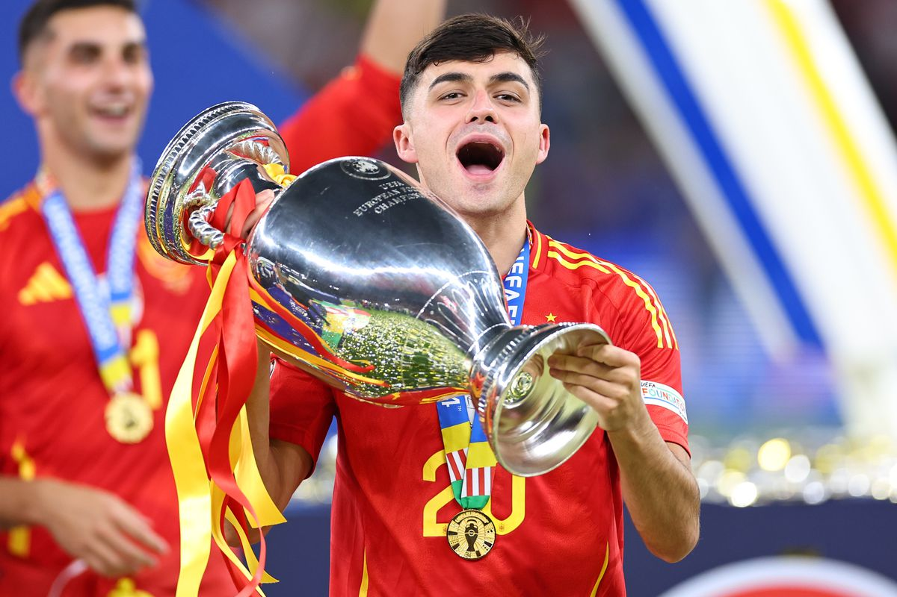
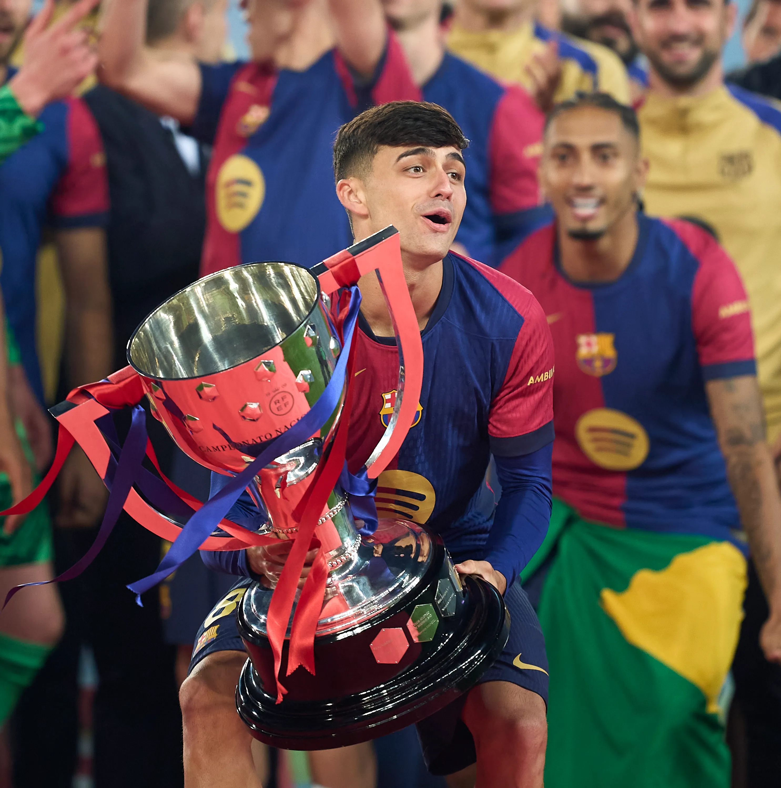
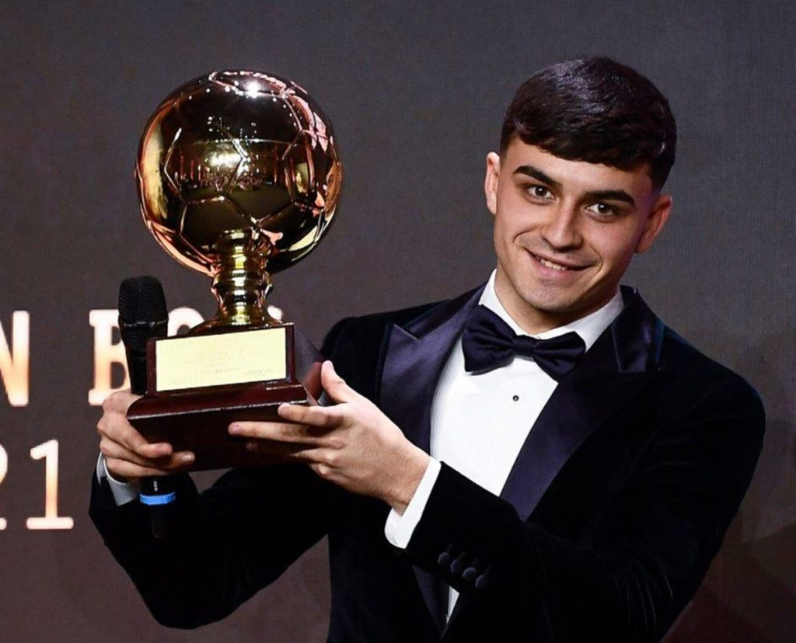
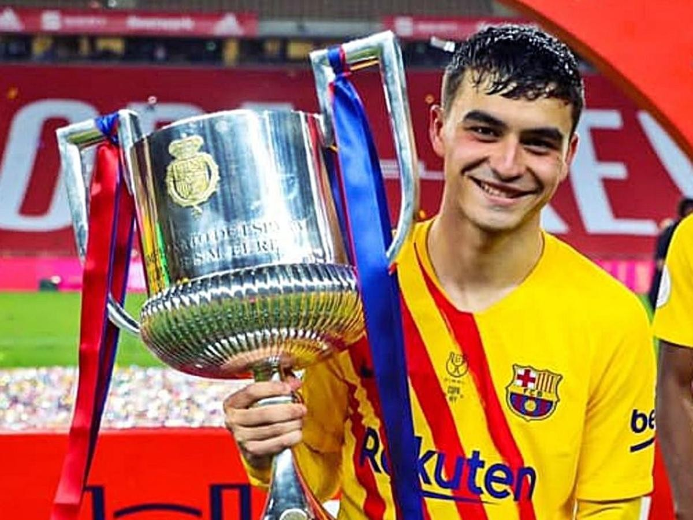
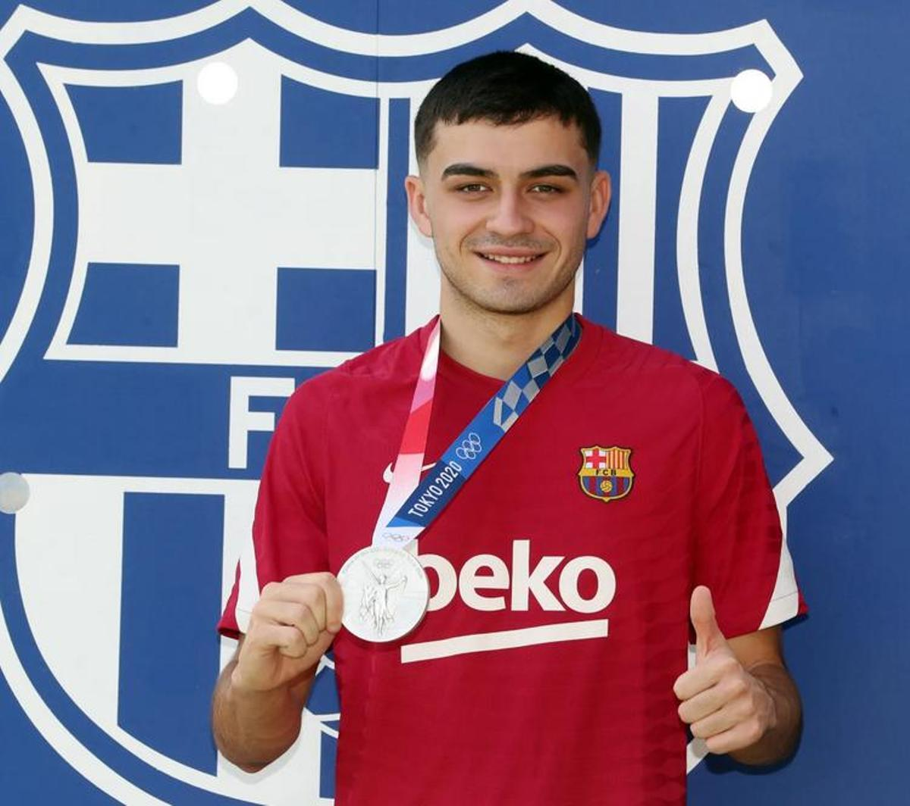
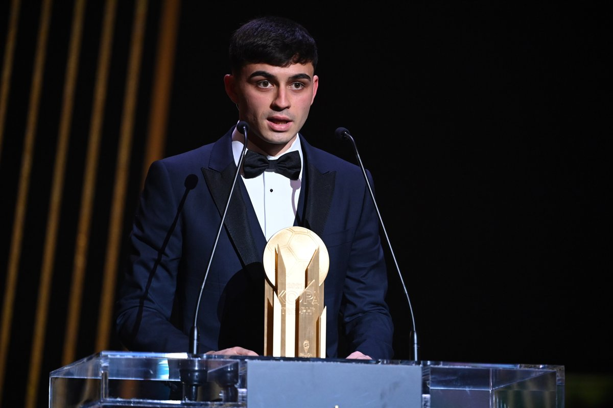

Títulos y distinciones de una carrera legendaria

El gran éxito internacional. Pedri fue el cerebro que guió a "La Roja" hacia el trono europeo, demostrando que su visión de juego no tiene fronteras.

El premio a la regularidad. Pedri ha sido pieza clave en la reconquista del campeonato doméstico, dominando los tiempos en cada partido clave del Camp Nou.

Reconocido como el mejor jugador sub-21 del mundo. Un galardón que confirmó lo que todos ya sabíamos: estábamos ante un talento generacional único.

Su primer gran título con la camiseta azulgrana. Una competición donde su conexión con Messi dejó jugadas para el recuerdo eterno del barcelonismo.

Tras una temporada agotadora, Pedri lideró al equipo olímpico hasta la final, colgándose una medalla de plata histórica para el deporte español.

Entregado por France Football durante la gala del Balón de Oro, coronándolo como el mejor futbolista joven del planeta en una gala inolvidable.